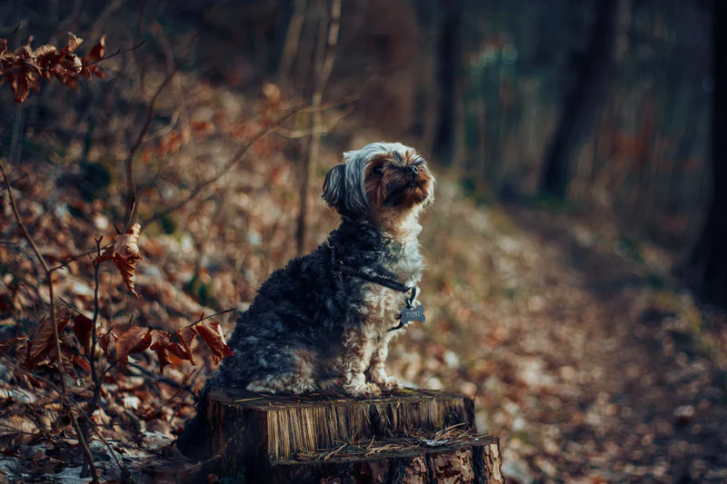
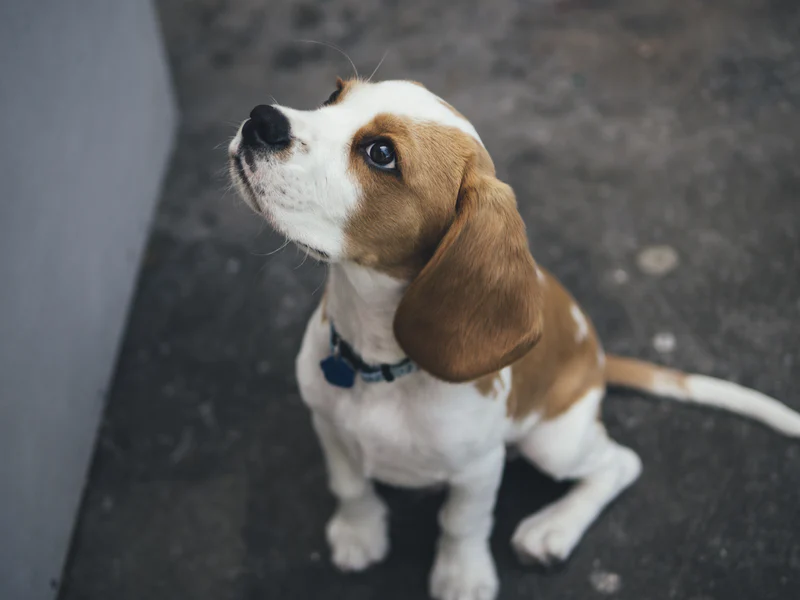
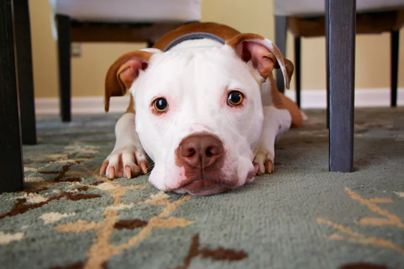

Why are These Dog Breeds Good?
Labrador Retriever
Labrador Retriever also known as a Lab are known to be some of the gentlest breeds around. Labs are highly food motivated, making them super easy to train than other breeds. They are surper friendly and normally great around children. They are an excellent choice for ESA work.
Yorkshire Terrier

Yorkshire Terrier also known as a Yorkie are known for being lap dogs. Since they are smaller dogs they don't require a huge amount of space or exercise, which makes them great dogs if you live in an apartment or an older couple. Yorkies are happiest when they are perched on their owner's lap or nearby their owners. But, most importantly they love physical contact.
Beagle

Beagles are known for their sense of smell, which means they love nature. Beagles are a good dog to have to make you get out of the house and explore the outdoors. Beagles possess a personality that includes either active and energetic or cuddly and calm.
Dachshund
Dachshunds are one of my favorite dogs. They are known for their affectionate and lively personalities. Which is why that makes them a great dog when dealing with anxiety or depression.
Pit Bulls

Pit Bulls are some of the biggest babies you will ever meet if you train them right. They are easliy trained and will keep your home guarded. They form a solid bond with their owners. Something not to forget about Pits is that they have relatively few health problems.